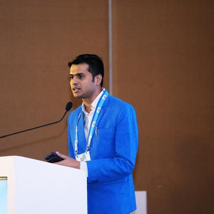
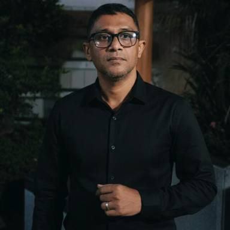
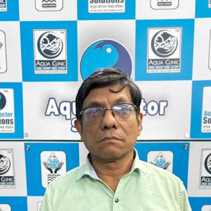
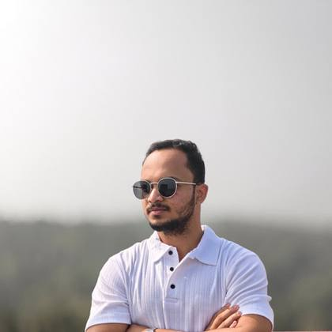
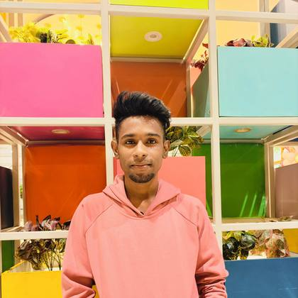
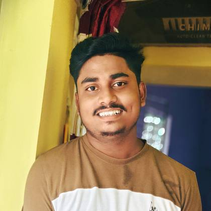
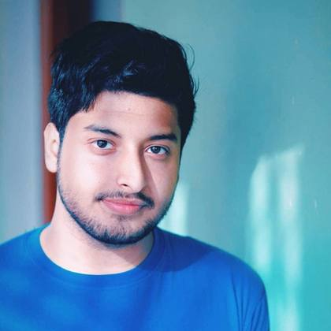

One shop, one stop solution for modern aquaculture services
Founded in Kolkata in 2019 by Dr. Debtanu Barman, the “Aqua Doctor”, to bring scientifically proven, high-yield fish farming techniques to farmers and entrepreneurs in Eastern India.
Company overview
Who we are
Aqua Doctor Solutions, established on 14th July 2019, works actively in the East and North-Eastern states of India. We provide end-to-end aquaculture support, including quality inputs, fish health management, water quality solutions, technical advisory, consultation and farm-level guidance, up to market linkage.
We collaborate with fish farmers, hatcheries and aquaculture input partners to promote sustainable practices, healthy fish production and improved farmer livelihoods.
- Established
- 14th July 2019, Kolkata, West Bengal
- Where we work
- East and North-Eastern states of India; footprints in Bangladesh, Bhutan and Nepal
- Who we serve
- Fish farmers, hatcheries, FFPOs and SHGs, aquapreneurs, fisheries institutes and KVKs
- Head office
- 1/11, Arabinda Nagar, Jadavpur, Kolkata 700032

“Today, Aqua Doctor Solutions & Aqua Clinic stands as the foremost One Shop – One Stop Solution for All Modern Aquaculture Services in Eastern India.”
ADS Annual Report 2025
What we provide
- Quality aquaculture inputs
- Fish health management
- Water quality solutions
- Technical advisory and consultation
- Farm-level guidance
- Market linkage
Our approach
Science, technology and ethics, for long-term success
Scientifically proven practice
High-yield fish farming techniques designed for long-term success, delivered to farmers and entrepreneurs.
Technology with professional ethics
A team of young professionals who blend state-of-the-art technology with unwavering professional ethics.
Blue Economy and the SDGs
Sustainable fish production that reduces pressure on capture fisheries and advances the small-pond ecosystem.
Leadership
Dr. Debtanu Barman
Founder and CEO, Aqua Doctor Solutions
Dr. Debtanu Barman is a young aquapreneur and aquaculture consultant from Kolkata, West Bengal, widely recognised as the “Aqua Doctor”, a title earned through his pioneering contributions to the aquaculture industry.
He specialises in expert advice, technology transfer and aquaculture farm management services. His work focuses on integrating modern technologies and spreading best management practices to improve productivity and sustainability in existing aquaculture operations.
Aqua Doctor Solutions & Aqua Clinic was founded in 2019 under his leadership, initially funded through his personal investment. The company's growth was strengthened by a grant from the National Fisheries Development Board (NFDB), Hyderabad, facilitated through the National Institute of Agricultural Extension Management (MANAGE), Hyderabad, Government of India.
He also delivers training at institutes on fisheries and its role in employment generation, with a focus on sustainable aquaculture, enterprise development and livelihood opportunities.
Message to aquafarmers and colleagues
Every pond managed, every seed nurtured, and every scientific practice adopted has the potential to transform lives.
“We sincerely appreciate the dedication and hard work of our aquafarmers, whose commitment to pond management, fish health and sustainable practices forms the backbone of aquaculture. Despite challenges from climate, disease and market fluctuations, your resilience continues to support food security, livelihoods and rural development.”
“We also extend our heartfelt thanks to our colleagues for their teamwork, knowledge sharing and professional integrity. Your field efforts, research support and collaborative approach have strengthened our shared mission.”
Selected recognition
- 2024National Atal Award, category Water Solution. Prime Minister Museum, Teen Murti, New Delhi
- 2024Best Entrepreneur Award, ICAR-CIFE Kolkata Centre
- 2024Best Fisheries Consultant, Aranya Bangla Foundation
- 2022Young Aqua Extension Worker Award, National Fish Farmer Conclave, Dept. of Fisheries, Govt. of Uttar Pradesh
- —Agri Icons 40 Under 40, Aqua Agriculture Changemaker, Krishi Jagran
Our journey
From a personal investment in Kolkata to a group of seven organisations
Milestones taken from the 2025 annual report and the awards record.
- 201914th July
Aqua Doctor Solutions & Aqua Clinic founded
Established in Kolkata, West Bengal, funded through Dr. Barman's personal investment. The same year he received the Harit Puraskar at the 5th National Youth Convention.
- —Year to confirm
Grant from NFDB, facilitated by MANAGE
A grant from the National Fisheries Development Board, Hyderabad, facilitated by MANAGE, Hyderabad, Government of India, strengthens the company's growth.
- 2021
Recognised as a one-stop aquaculture service provider
India Icon Awards 2021 and the Bengal Leadership Award name ADS the Best One Stop Aquaculture Services and Consultancy in West Bengal. National Excellence Award for contribution to Biofloc fish farming.
- 2022
Extension work and start-up recognition
Young Aqua Extension Worker Award at the National Fish Farmer Conclave, and Best Fisheries Start-up of the Year at the Rural and Urban Development Summit.
- 2024
National Atal Award and MSME Honours
National Atal Award in the Water Solution category, and the MSME Honours Champion of Cause award presented to Aqua Doctor Solutions. Matsyasathi featured among the 10 best fisheries and aquaculture start-ups.
- 2025
Summits and the Matsya Sathi app
Aqua North-East Summit in Guwahati with Fishery News, the UP Fisheries Growth and Investment Summit, the Fisheries Startup Conference, and the launch of the Matsya Sathi app.
- Today
2,000+ farmers and 10 FPCs/FFPOs in the ADS network
Seven organisations in the ADS group, MoUs with more than five fisheries institutes and KVKs, and work across East and North-East India with footprints in Bangladesh, Bhutan and Nepal.
Wings of ADS
The ADS group of companies
Seven organisations, each covering one part of the aquaculture value chain, from trading and training to media and CSR.
Our team
Team of Aqua Doctor Solutions
The people farmers and partners work with: on the phone, in the office, at the warehouse and at the pond side.







Mission and vision
What we work towards
Our mission
- Provide reliable and practical aquaculture solutions
- Support fish farmers with technical knowledge and quality products
- Improve productivity, fish health and farm management
- Make professional aquaculture support accessible to farmers
Our vision
- Sustainable aquaculture and modern fish farming
- Technology-driven solutions
- Farmer empowerment, with better productivity and profitability
- A trusted aquaculture service network